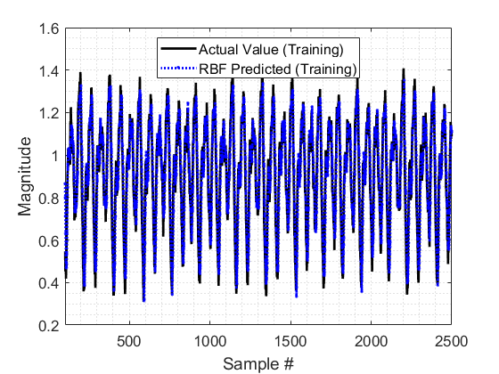
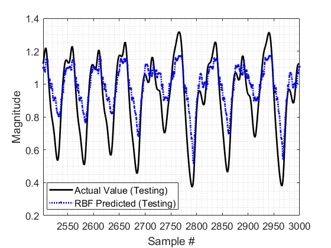
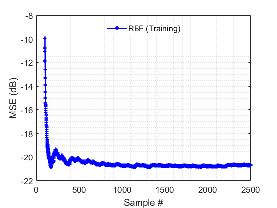
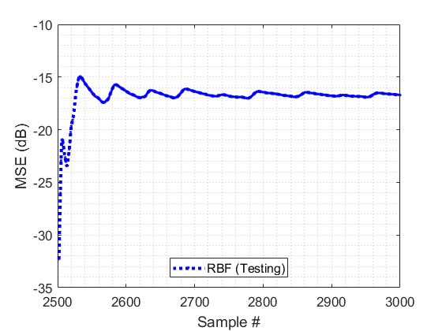

Contents
Mackey Glass Time Series Prediction using Radial Basis Function (RBF) Neural Network
Author: Shujaat Khan, shujaat123@gmail.com
clc; clear all; close all;
Loading Time Series Data
I generated a series x(t) for t = 0,1, . . . ,3000, using mackey glass series equation with the following configurations: b = 0.1, a = 0.2, Tau = 20, and the initial conditions x(t - Tau) = 0.
load Dataset/Data.mat % Training and Test datasets time_steps=2; % prediction of #time_steps forward value (for this simple architechture time_steps<=3) % Training start_of_series_tr=100; end_of_series_tr=2500; % Test start_of_series_ts=2500; end_of_series_ts=3000; P_train=Data(start_of_series_tr:end_of_series_tr-time_steps,2); % Input Data f_train=Data(start_of_series_tr+time_steps:end_of_series_tr,2); % Label Data (desired output values) indt=Data(start_of_series_tr+time_steps:end_of_series_tr,1);% Time index SNR = 30; % signal to noise ratio f_train=awgn(f_train,SNR); % Adding white Gaussian noise
Simulation parameters
Defining architechture of the RBF-NN
[m n] = size(P_train);% Dimensions of input data [m]-length of signal, [n]-number of elements in each input order=2; % Number of past values used for the prediction of future value n1 = 20; % Number of hidden layer neurons % Tuning parameters for training epoch=10; % simulation rounds (number of times the same data pass through the NN for training) eta=1e-1; % Gradient Descent step-size (learning rate) runs=1; % Number of Monte Carlo simulations Iti=[]; % Initial mean square error (MSE) % Graphics/Plot parameters fsize=13; % Fontsize lw=2; % line width size
Training Phase
for run=1:runs % Monte Carlos simulations loop % spread and centers of the Gaussian kernel [temp, c, beeta] = kmeans(P_train,n1); % K-means clustering beeta=4*beeta; % Increasing spread of Gaussian kernel % Initialization of weights and bias w=randn(1,n1); % weight b=randn(); % bias for k=1:epoch % simulation rounds loop I(k)=0; % reset MSE U=zeros(1,order); % reset input vector for i1=1:m % Iteration loop % sliding window (updating input vector) U(1:end-1)=U(2:end); U(end)=P_train(i1); % current value of time-series % Gaussian Kernel for i2=1:n1 phi(i1,i2)=exp((-(norm(U-c(i2,:))^2))/beeta(i2,:).^2); end % Calculate output of the RBF y_train(i1)=w*phi(i1,:)'+b; e(i1)=f_train(i1)-y_train(i1); % instantaneous error in the prediction % Gradient descent-based weight-update rule w=w+eta*e(i1)*phi(i1,:); b=b+eta*e(i1); % Mean square error I(i1)=mse(e(1:i1)); % Objective Function end Itti(epoch,:)=I; % MSE for all iterations end Iti(run,:)=mean(Itti,1); % Mean MSE for all epochs end It=mean(Iti,1); % Mean MSE for all independent runs (Monte Carlo simulations)
Test Phase
P_test=Data(start_of_series_ts:end_of_series_ts-time_steps,2); f_test=Data(start_of_series_ts+time_steps:end_of_series_ts,2); indts=Data(start_of_series_ts+time_steps:end_of_series_ts,1); [m n] = size(P_test); for i1=1:m % Iteration loop % sliding window (updating input vector) U(1:end-1)=U(2:end); U(end)=P_test(i1); for i2=1:n1 phi(i1,i2)=exp((-(norm(U-c(i2,:))^2))/beeta(i2,:).^2); end y_test(i1)=w*phi(i1,:)'+b; e_test(i1)=real(f_test(i1)-y_test(i1)); I(2400+i1)=mse(e_test(1:i1)); end
Results
Input and output signals (training phase)
figure plot(indt,f_train,'k','linewidth',lw); hold on; plot(indt,y_train,'.:b','linewidth',lw); xlim([start_of_series_tr+time_steps end_of_series_tr]); h=legend('Actual Value (Training)','RBF Predicted (Training)','Location','Best'); grid minor xlabel('Sample #','FontSize',fsize); ylabel('Magnitude','FontSize',fsize); set(h,'FontSize',12) set(gca,'FontSize',13) saveas(gcf,strcat('Time_SeriesTraining.png'),'png') % Input and output signals (test phase) figure plot(indts,f_test,'k','linewidth',lw); hold on; plot(indts,y_test,'.:b','linewidth',lw); xlim([start_of_series_ts+time_steps end_of_series_ts]); h=legend('Actual Value (Testing)','RBF Predicted (Testing)','Location','Best'); grid minor xlabel('Sample #','FontSize',fsize); ylabel('Magnitude','FontSize',fsize); set(h,'FontSize',12) set(gca,'FontSize',13) saveas(gcf,strcat('Time_SeriesTesting.png'),'png') % Objective function (MSE) (training phase) figure plot(start_of_series_tr:end_of_series_tr-1,10*log10(I(1:end_of_series_tr-start_of_series_tr)),'+-b','linewidth',lw) h=legend('RBF (Training)','Location','North'); grid minor xlabel('Sample #','FontSize',fsize); ylabel('MSE (dB)','FontSize',fsize); set(h,'FontSize',12) set(gca,'FontSize',13) saveas(gcf,strcat('Time_SeriesTrainingMSE.png'),'png') % Objective function (MSE) (test phase) figure plot(start_of_series_ts+time_steps:end_of_series_ts,10*log10(I(end_of_series_tr-start_of_series_tr+1:end)),'.:b','linewidth',lw+1) h=legend('RBF (Testing)','Location','South'); grid minor xlabel('Sample #','FontSize',fsize); ylabel('MSE (dB)','FontSize',fsize); set(h,'FontSize',12) set(gca,'FontSize',13) saveas(gcf,strcat('Time_SeriesTestingMSE.png'),'png') % Mean square error 10*log10(((f_train'-y_train)*(f_train'-y_train)')/length(y_train)) 10*log10(((f_test'-y_test)*(f_test'-y_test)')/length(y_test))
ans = -20.7012 ans = -16.7144



